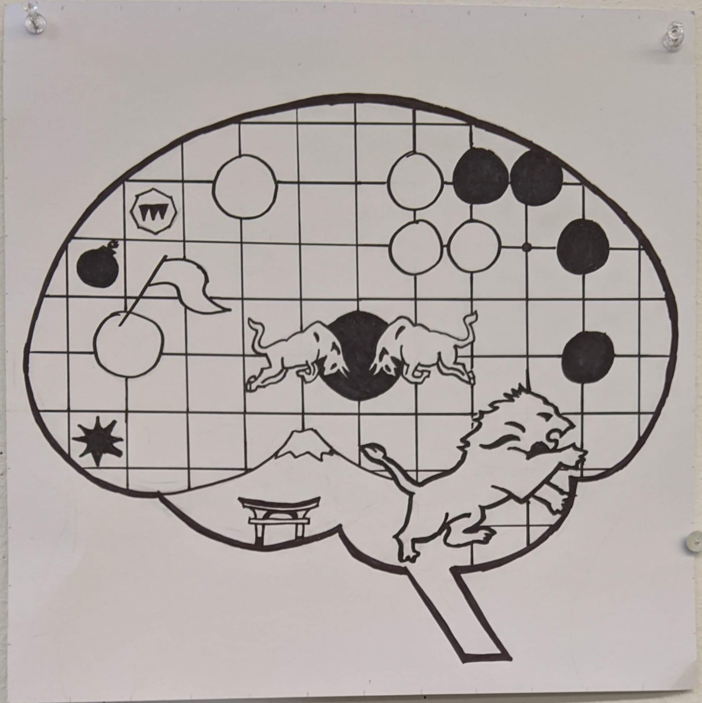
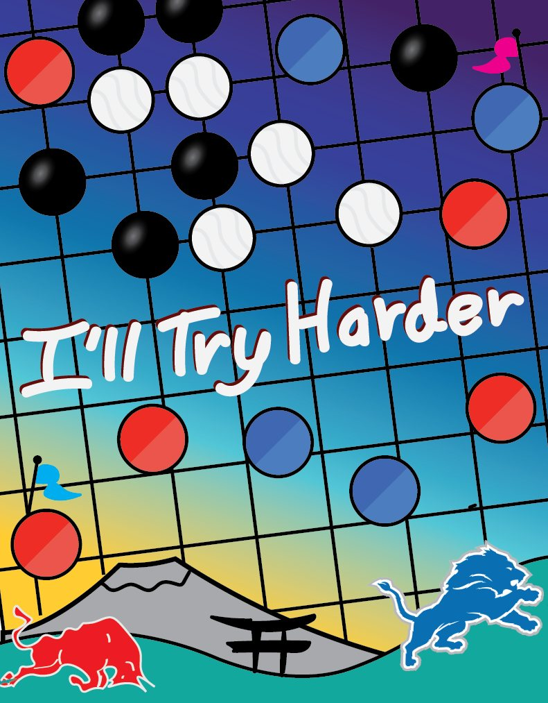

About
Hello, I'm Nithin
I trained in computer science and cognitive science, and I have spent the years since building tools that help people make sense of language at scale: clinical notes at the VA, ten million tweets at Wisconsin, and policy data in Singapore.
The question underneath all of it is how people and AI systems come to understand one another, and what that understanding does for well-being.
The path so far
- 2017 to 2021
Ann Arbor
University of Michigan. Computer Science and Cognitive Science, with a minor in Complex Systems. A research assistant in the Lifelong Learning Lab, and a semester studying abroad at HKUST.
- 2022 to 2024
Madison
University of Wisconsin-Madison. An M.S. in Computer Sciences, teaching assistant for two HCI courses, and topic models of COVID-19 discourse.
- 2025
Veterans Affairs
A research fellowship turning clinical notes into research data, with language models and clinicians working side by side.
- 2026
Singapore
Volunteering with the CHAT Lab at Singapore Management University: policy dashboards and a review of mental health chatbots.
Outside research
- Podcasts
- Graphic design
- Board games
- Fantasy football
- Cooking
- Long dinners with friends


Motto
"I'll try harder."
I made this poster in a design class during the semester COVID-19 broke out. Classes were interrupted, I moved home, and I finished the term proud of some of the work but not of my effort.
The motto is the promise I made to make up for that. It still shapes how I work: ship the thing, look at it honestly, then try harder.